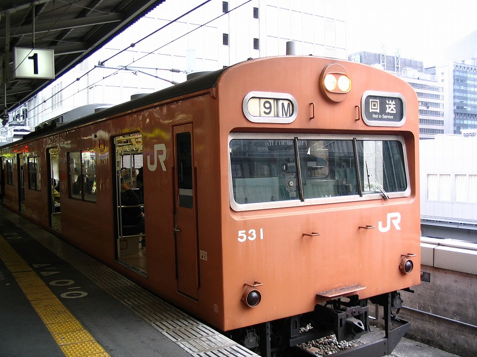
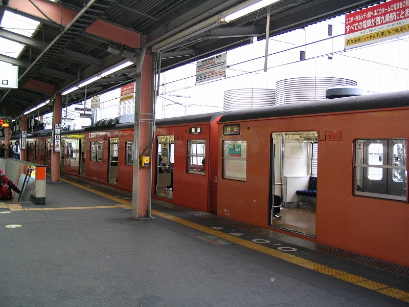

ＸＸ線とかいわれても元々知識ないので判りにくかったので、ウチは1974年の時刻表を片手にみてました。
Ｙ夫は「大畑行ったなあ」「96!」「セノハチといやあアレだろうな。見とけよ映像。」「やっぱ客車は10系だな～」とか、一人饒舌でした
たしかに景色とか情景が美しい。かっちょいいいし。
けどね、けどね、1.5時間みてたら、モー飽きてきた。黒いのんが煙吐き出しながら走ってる映像ばっかしやねんもん。
旦那はずっと饒舌＆興奮気味で、「こいつは小さくてかわいいなあ。ポーじゃなくてピーだな」とか興味津々ＫＥＥＰだったが、
ウチが楽しく見れるのは一時間チョイでござります。。。

ネタがないです。2005/12の写真。もしかしたら一度掲載したカモです。
ある日、天満から大阪まで環状線に乗りました。電車見た途端旦那がオッという顔になり、乗り込んだ後、ウチに話しかけました。
「おいおい！見たか、気づいたか、この電車。おれら、変った電車に乗ってるぞ。」
で、カメラを取り出して大阪降りた途端撮影開始。妻、なんのこっちゃ。


「回送」のまんま、福島に向かって行きました。これってよくあるんですかね、環状線。
都島